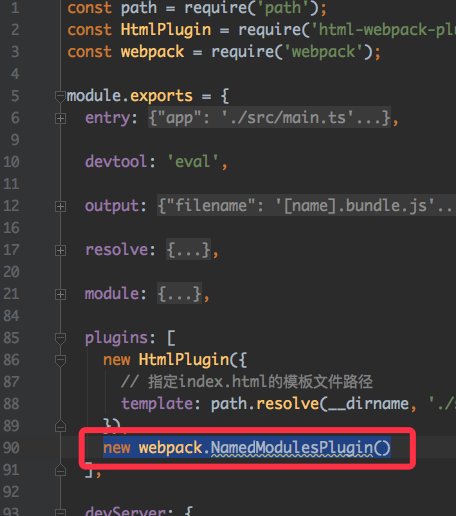

Angular从零开始 - 03. hot module replacement2017-06-09
什么是HMR
webpack官方有非常详细的解释：https://doc.webpack-china.org/concepts/hot-module-replacement/
模块热替换功能会在应用程序运行过程中替换、添加或删除模块，而无需重新加载页面。这使得你可以在独立模块变更后，无需刷新整个页面，就可以更新这些模块，极大地加速了开发时间。
简单说就是修改代码之后不需要刷新整个页面就能看到效果。
启用HMR
先来看一下最终的效果：

从控制台没有先清空可以看出我们在修改了模板文件之后，并不是整个页面reload，而是重新加载了相关的模块，控制台也会输出具体重载了哪些模块
在使用webpack-dev-server的情况下，开启HMR非常的简单：
在启动
webpack-dev-server时添加参数--hot
在应用入口文件，也就是
./src/main.ts中添加如下代码：if (module && module['hot']) { module['hot'].accept(); }如果只有前面2步的话，其实已经可以了，只不过控制台输出的重载的模块信息显示的是模块id，而看不出模块对应的是哪个文件。所以如果你需要关心具体对应的文件的话，在webpack的配置中添加
NamedModulesPlugin即可：
然后启动开发服务就完成啦
npm start
本阶段源码
https://github.com/indooorsman/angular-twitter/tree/hmr
下一篇教程中我们将会实现AOT(Ahead-of-time )编译
EOF
评论